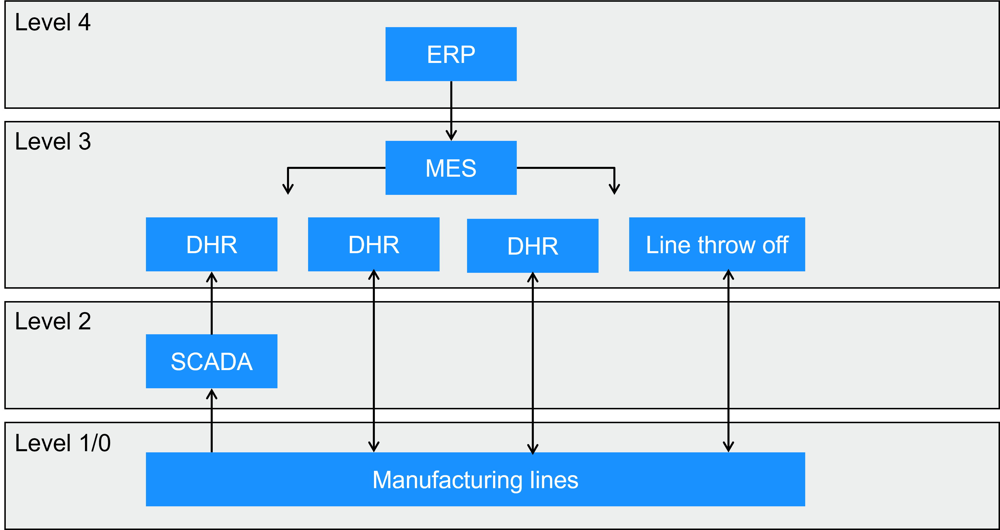
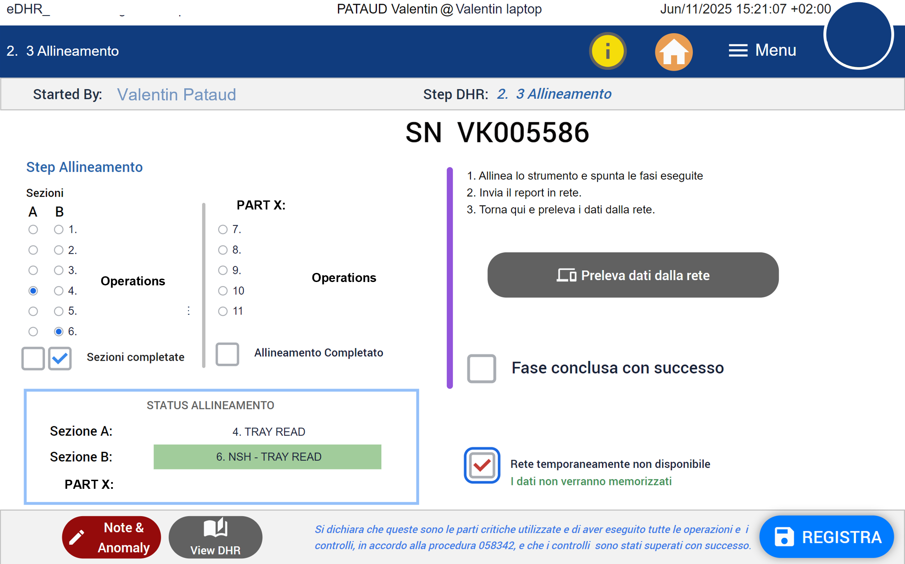
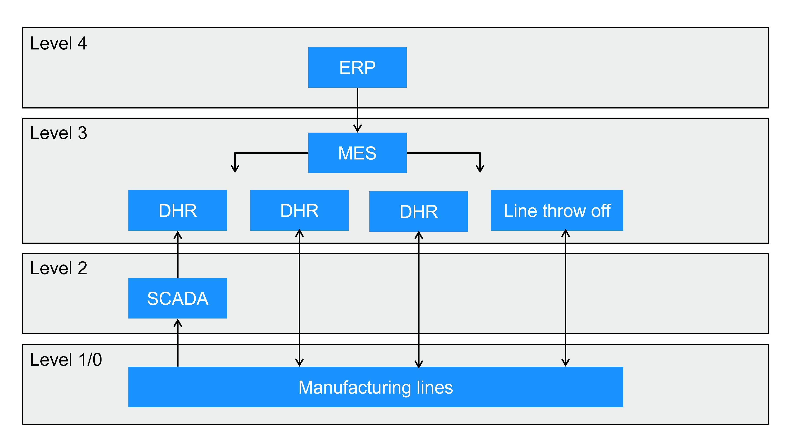

Digitalizing batch records (DHR) in a medical device environment
Lessons learned: from paper records to connected DHRs, on a low-code platform.
The context
Every medical device that is manufactured comes with a batch record, the DHR (Device History Record), which proves that its manufacture meets the requirements. For two years at bioMérieux, in Florence, I digitalized these records on the Tulip low-code platform. In total, 14 applications were developed, validated and deployed, including 11 DHRs.

Why digitalize a DHR
Paper does its job, but it isolates information: it stays in the record until the record is closed, entered by hand, reviewed after the fact. Digitalizing the DHR changes the game: information becomes available in real time to other departments, checks are carried out as work progresses, and the record no longer depends on a physical medium.
In addition, permanently storing batch records becomes less of a burden than archiving mountains of sheets.
What the applications do
- Recipes and business operations. Batch records are the trace of the operations carried out during production. Their digital version can go beyond simply recording activities: it can guide operators through the manufacturing instructions, embed production recipes and automatically use the results of operations. Some checks can thus be performed directly on the line, as production proceeds. The digital DHR then becomes much more than a regulatory traceability tool: it actively contributes to the execution, control and reliability of operations.
- Controlled access. Access to digitalized DHRs (EBR, Electronic Batch Record) is controlled, which meets the requirement to know who did what. The DHRs then implement what is known as a “Role-Based Access Control” system.
- Production orders. The MES, interfaced with SAP, distributes production orders to the assembly benches according to a DDMRP (Demand Driven Material Requirements Planning) schedule. These production orders cross-reference the data between the serial numbers coming off the lines and the administrative management of the plant.
- Serial numbers. They are created and tracked across the whole process, including line scrap, with an interface to the anomaly management system.
- Plant integration. They replace paper and give real-time information to the departments concerned, including the warehouse (spare parts, supply chain).
- Automated quality control. Checks are done in real time, with a review by exception at the end of the process: attention goes to the deviations.
- Instrument data. It feeds directly into the DHR, without re-entry, via a data management system at level 2 of the ISA-95 model.

The architecture
The whole follows the ISA-95 model. At level 2, Node-RED provides a SCADA- and IoT-type layer: it collects the instrument data and feeds it back to the DHR. At level 3, the Tulip platform acts as the MES. The design follows the ALCOA+ data integrity principles, and the whole was validated and qualified, following the 21 CFR Part 11 and ISO 13485 standards.

Compliance and role
My role covers design, development and deployment. Responsibility for validation remains with the company: I took part in validations as technical lead for the risk and compliance studies, and acted as test executor on certain other systems. The applications are delivered compliant with the regulatory requirements indicated.
Results
- 14 applications deployed, including 11 DHRs, a quality management application and the MES.
- About 1,100 hours per year saved (estimate) in production and quality, plus about 116 hours per year of paper traceability eliminated thanks to the MES.
- A deployment first in Florence, then expertise applied at other sites in France.
- Grand Prix Talents V.I.E & ALUMNI 2026, innovation category.
What I take from it
On Tulip or other low-code platforms, the code matters little. The essential lies elsewhere: mapping the process, translating it into a digitalized process, then integrating it in a regulated environment, with the governance, traceability and access control that go with it. This is the work that makes it possible to move from paper to a reliable, auditable system.